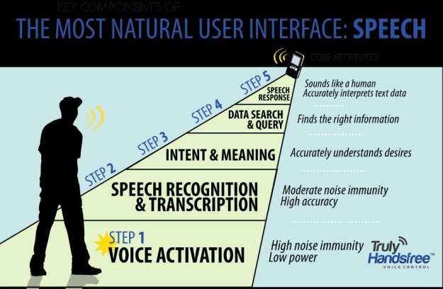

Sensory’s TrulyHandsfree™ Voice Control technology builds upon the initial success of our TrulyHandsfree™ Trigger, and now offers multiple phrase technology that recognizes, analyzes and responds to dozens of keywords. It consistently recognizes phrases even when embedded in sentences and surrounded by noise. Traditional approaches to keyword spotting have failed in high noise and frequently false fire, but TrulyHandsfree™ can have over 95% accuracy without false fires even in high noise and speech. Smartphones, Bluetooth devices and consumer electronics for the home and the car can now offer a TrulyHandsfree™ experience from beginning to end.
With TrulyHandsfree™ Voice Control, users are not required to hold the device to their mouth to deliver commands. The technology can respond to commands delivered as far as 20 feet away or in high noise conditions making it a perfect solution for controlling devices in the home while multitasking or in the car where users need to focus on driving. The technology is now part of the FluentSoft SDK and is available for Android™ environments with other platforms under review.
RulyHandsfree™ Voice Control can be added to any everyday consumer electronics products with a single chip solution from Sensory. Sensory’s NLP-5x integrated circuit and FluentChip firmware enables products to wakeup and respond when their name is called, so no button pressing or manual manipulation is needed for implementing hands-free voice control. This very low-power technology is extremely robust to noise and designed to prevent false triggers during normal room noise and conversations.